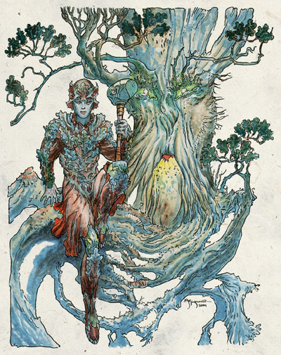
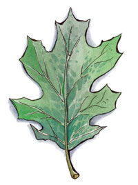

西凡那斯 Silvanus（自然之神）

费伦神系 强大神力
别称：橡树之父 Oak Father，森林之父 the Forest Father，树木之父 Treefather
圣徽：青翠的橡树叶

居住界域：自然之殿 House of Nature
神职：荒野 wild nature，德鲁依 druids
信徒：德鲁依，森林住民，木精灵
牧师阵营：中立善良 NG，守序中立 LN，绝对中立 N，混乱中立 CN，邪恶中立 NE
神域：动物 Animal，植物 Plant，保护 Protection，复苏 Renewal，水 Water
喜好武器：西凡那斯的木槌（巨锤）The Great Mallet of Silvanus（maul）
西凡那斯是一位有如慈父般的睿智神祇，但当祂必须维持自然界的平衡时，会一反常态显得十分冷漠；而当发现有人胆敢威胁荒野大地时，甚至会展现可怕的怒气。祂常使用的形象，是一张浮现在林叶间或老树干上的长须老者脸庞，蕴含着不可思议的智慧。
整个费伦大陆上到处都有着西凡那斯教会的势力，其拥有的力量远远超出一般
的 想象。虽然许多人都对裳缇亚（Chauntea）的教会较具好感（视其为农业的守护者，支持文明的扩张），而认为西凡那斯教会是文明发展的大敌－但这两种 看法都是不正确的，只要稍加理解，就可分辨出橡树之父与「狂怒众神」（Deities of Fury）之间的差异所在。
信奉西凡那斯的 牧师与德鲁依在黄昏时（或月光照拂下）祈祷以获得神术。教会的圣日包括绿草节（Greengrass）、仲夏节之夜（Midsummer night）、丰收节（Highharvestide）、以及「森息圣夜」（Night the Forest Walks）－最后者乃
是一不定期的圣夜，每当森林之父开始不安时就会举行。那时祂会让树木起身四处行走、溪流改道、洞穴闭合（或开启）、林中生物骚动、且森林中的魔法大幅强化。信奉祂的牧师绝不会引导负能量去驱散不死生物。
许 多西凡那斯信仰中的祈祷仪式都必须位于山丘上巨木的树冠顶端进行。祈祷时必须进行献祭－但绝非血腥的奉献，而是打坏或掩埋（但不可烧毁）一件木制的物品－ 举例来说，用木料制成的手推车、蓬车、椅子便都是适合献给西凡那斯的祭品。在诸多祈祷仪式中，最简易者名为「橡树、梣树、及荆棘之唤」（Call of Oak、Ash、and Thorn），举行此仪式的牧师会收集上述三种植物的落叶，使其随水漂流，而后恳求森林之父聆听信众的祷告；如果是更重要的事（比如单一位牧师与神祇之间的对谈、或者祈求神祇赐下恩典），则常会进行「夜祷」（Vigil）－牧师会将橡实磨成的粉末、及浸泡过斛寄生树叶的雨水（或泉水）抹遍全身，然后整夜躺 卧在（或倚在）一棵茂密翠绿的大树底下进行祈祷。由于祈祷者必须持续碰触树上生长的青苔，因此覆满青苔的巨大树木通常都被使用作为进行「夜祷」的场所。
在 诸多仪式中最强大也最神圣的两者分别名为「树歌」（the Song of Trees）与「树精舞蹈」（the Dryad Dance）。在前者中，信众们会齐声重复吟唱令人印象深刻的圣歌，吸引林中生物前来驻足聆听；后者则是一个恢复森林生气的愉悦仪式，信众们会以笛声与舞蹈召唤树精们走出联系树木在林间漫游（甚至会远离自己的树木），前来与人类交合。然而，令人感到遗憾忧伤的是，西凡那斯信众们最常举行的却是名为「召唤荆 棘」（the Thorncall）的仪式－自森林边缘的土壤中召出大量浓密又致命的荆棘形成保护性的屏障。这些永久存在的围墙，会按照主持仪式牧师所希望地尽可能纠结 复杂－但唯有当森林之父的信众（或眷顾的生物，比如雄鹿）在邻近地区被屠戮或严重伤害时，才能在迫不得已之下召唤这种荆棘围墙。这道仪式是用来阻止那些焚烧、砍伐、掠夺森林资源的人，避免他们扰乱至圣的「一体至衡」（the Balance）。许多西凡那斯的牧师都会兼职德鲁依、游侠。或进阶成为森林主宰（Forest Master，另文介绍）、圣徒（Hierophaht）。
历史/与众神的关系 History/Relationship：
西 凡那斯与欧格马（Oghma）一样，都是与其它界域关联紧密的古老神祇。祂是裳缇亚（Chauntea）的紧密盟友，且梅莉凯（Mielikki）、埃达 丝（Eldath）、桂伦˙风暴（Gwaeron Windstorm）、菈芮（Lurue）、以及希昂莉亚（Shiallia）都直接或间接地为祂服务。祂极严厉地打击马拉（Malar，血腥猎杀之神） 与其信众的一切行动，认为如果放任嗜杀的猛兽之王（Beastlord，马拉的别称）乱来，那么所有的生物终将灭绝殆尽。同样地，虽然祂明白疾病与自然毁灭也是「一体至衡」中的一环，但祂却仍非常痛恨塔烙斯（Talos）与塔洛那（Talona）－因为这两位邪恶神祇对自然秩序漠不关心，只不过是想尽办法 满足自己毁灭一切的冲动。
教义 Dogma：
西凡那斯洞察万物，并平衡一切，祂调节泛滥与干旱、寒冰与烈焰、生命与死 亡。当遭遇问题时，唯有保持距离客观审视才能综观全局，盲目地附合大众的意见只会封闭自己的智慧。所有的一切、万事万物都在伟大的循环－精巧美妙的「一体至衡」之内。身为森林之父的信徒，最重要的职责便是尽可能清晰地了解神圣的「一体至衡」、设法让其它人亦能了解「一体至衡」、并对抗所有扰乱它的愚人。静 默地审视、估算，然后才采取行动。唯有当时间紧迫、或遭受攻击必须自卫时，才可动用武力。汝当尽全力反抗所有砍伐森林的行为、将一切疾病逐出森林、捍卫树木、并栽种新的植物。汝当努力地寻找、服侍、帮助树精，并设法记下她们的名字。唯有必要时才当动杀，毁灭所有的火焰与纵火者。对于兽人（或其它会把斧头带 入林中的生物）都要随时保持警戒。
牧师与神殿 Clergy & Temples：
西凡那斯的教会努力不懈地保 护神圣的「一体至衡」，避免外界的文明压力带入过多狩猎与农耕活动。为了抑制文明与人口的过度膨胀，教会的成员们暗中秘密地资助盗匪四处劫掠、并饲育掠食凶兽择地野放。这些计划都尽可能地秘密进行－因此大多数一般民众都只将西凡那斯的信众视为一群大自然与树木的爱好者。为了迎合这种印象，教会也顺道尽可能 地公开饲育（无攻击性的）野生动物、照料生病的动物、并四处栽种乔木与灌木－当然，这些作为也都能修复日益倾斜的「一体至衡」。西凡那斯的牧师们毕生都在研究费伦大陆上各种生物的生命周期，并学习以长远的眼光审视一切－如此一来才能看清每件事相互之间那千丝万缕的复杂关联（与未来发展）。他们对每件事都有 着长远的规划，希望能避免所有扰乱「一体至衡」的失误。他们都有着绝佳的耐心、丰富的自然知识、以及长远透彻的思考看法，此外，他们的力量也极为强大－这使他们在作战时成为致命的敌人。身为森林之父的侍奉者，他们要求并期许自己能在各种突发状况中保持沉着，随时都备有三种以上的应对策略，以求能在战斗中洞 察致胜先机。
西凡那斯的教会一向避免建立大型的正式神殿，且较偏好居住在小型的社群中－话虽如此，但他们也会聚集在大型城市中，努力地在城市里制造森林般的绿色地带。大多数的信徒都在森林中（特别是在古老的橡树下）、或在费伦各大森林深处的巨石圈内向树木之父祈祷。
西 凡那斯的牧师与德鲁依在仪式中的正式服装，都是一套看似以树叶制成的护甲。牧师们的盔甲是以金属制成，其防护力与一般鳞甲相同；德鲁依的护甲则是以染成绿 色的皮革制成，其防护力与一般皮甲相同。此外，他们都会在护甲之内穿着绿色的裤子与衬衫，并在头上带着雕有橡树叶装饰的头盔。西凡那斯教会有一整套完整的神职阶层体系，由德鲁依们掌控一切－但有许多成员（特别是牧师与游侠）都不在此体系之内。整个教会由许多自古流传至今的德鲁依团体（亦称为「环」， circle）共同组成，各由一位被尊为「高阶德鲁依」（archdruid）的德鲁依领导，其所属成员也各自分属不同的阶级。而每位高阶德鲁依都由该地区（region）内的「大德鲁依」（grand druid）领导；大德鲁依们则由整个信仰中地位最高的一位「圣德鲁依」（great druid）领导。「圣德鲁依」是一个常人难以胜任的沉重职位，因此通常过不了几年就会再度换人担任。已卸任的前任圣德鲁依们都会被尊为长老。
西凡那斯的化身 Silvanus's Avatar：
西 凡那斯的化身有长者与少年两种形象。「年长父亲」（the Old Father）是一张睿智长须老者的脸庞，浮现在林叶之间（或一棵年代极久远的大树树干上）。祂脸庞的肌肤就像老树的树皮一样，呈现灰或褐色，且布满许多裂隙。「年少神行客」（the Young Strider）则是一位长腿少年，穿着一附雕饰许多橡树叶的鳞甲。当一块林间圣地遭逢威胁、或德鲁依信徒们在祈祷中受到（外来）攻击时，西凡那斯便常会派遣化身前来援助。西凡那斯的化身与本体一样，都非常痛恨火焰、以及那些意图纵火（或用火不谨慎）的人。
--
资料来源：费伦大陆信仰与神系《Faiths & Pantheons》
译者：一凡